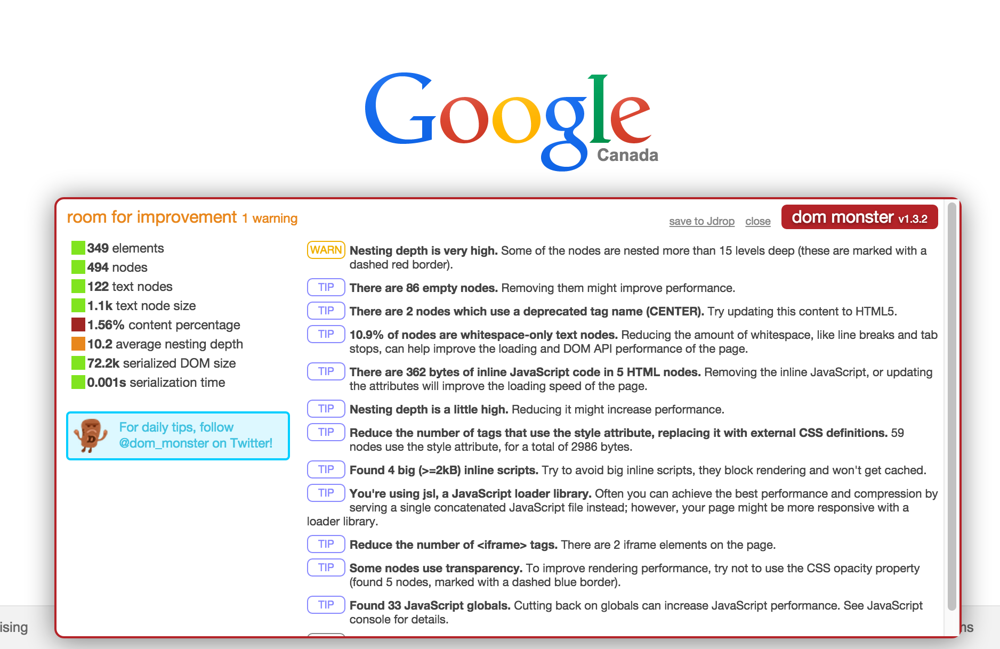
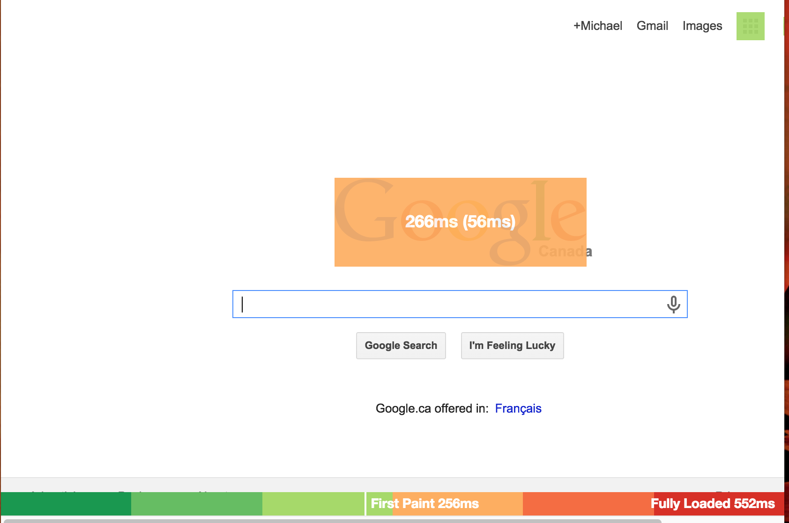
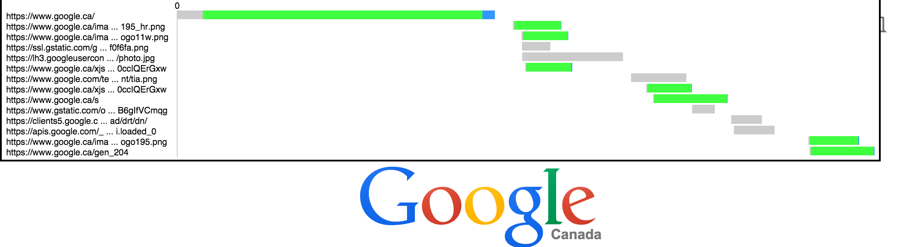
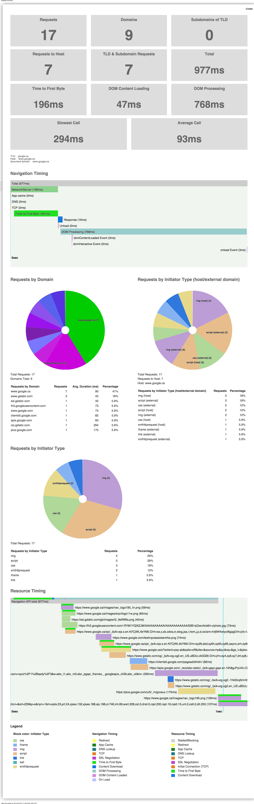
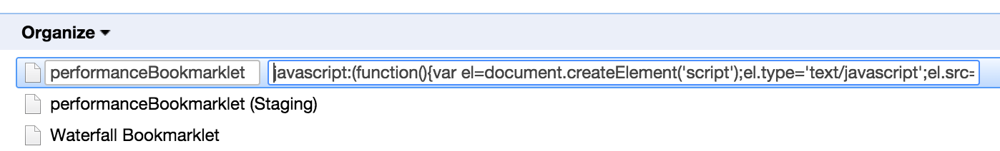
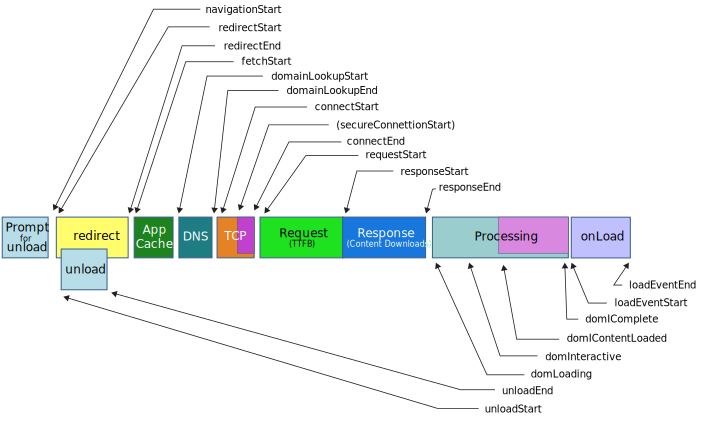
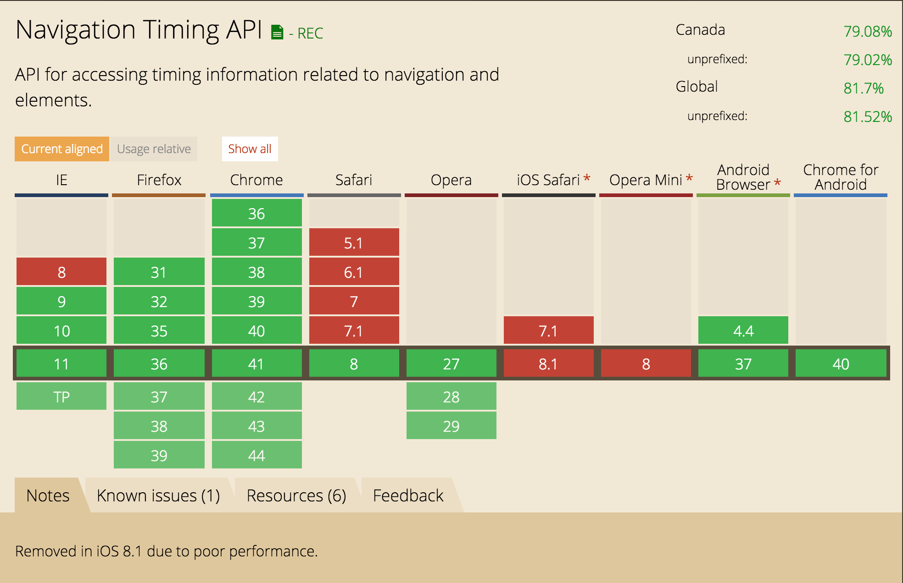
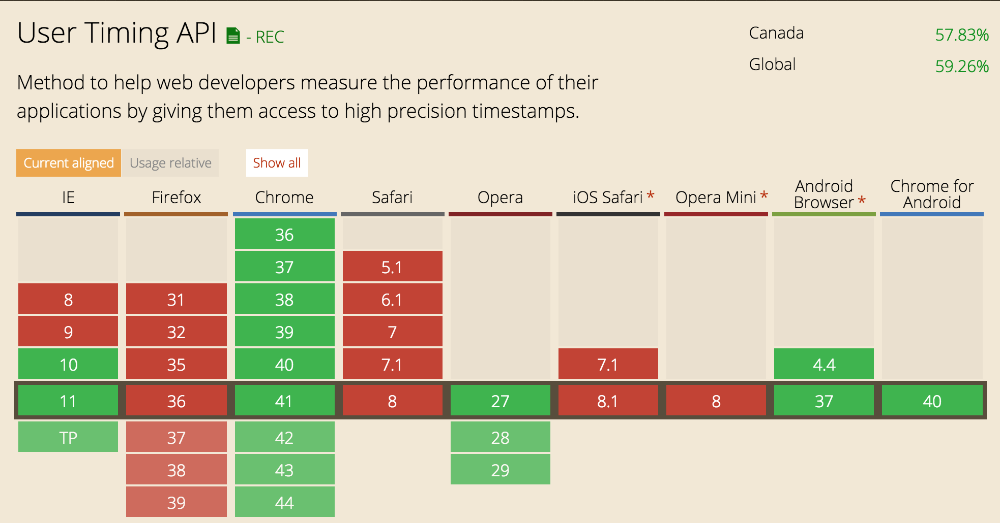
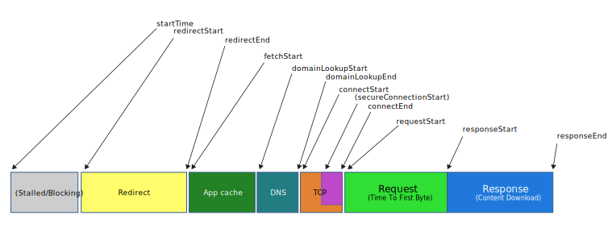
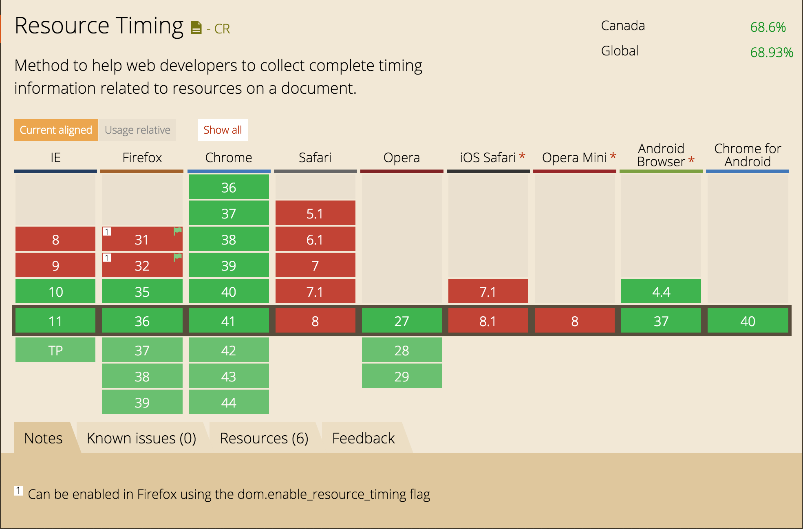

Full:
http://lab.michaelmrowetz.com/bookmarklet-tutorial
Short:
http://goo.gl/TK44i6
Sr. Frontend Dev at Nurun (soon to be RazorFish)
Karlsruhe > Sydney > Galway > Seoul > Toronto
@MicMro
https://github.com/micmro




javascript:(function(){
var el = document.createElement('script');
el.src = 'http://lab.michaelmrowetz.com/tutorial/test.js';
document.getElementsByTagName('body')[0].appendChild(el);
})();
*needs to be inlined
Via Bookmark Manager


performance.timing
var fullNetwork = performance.timing.responseEnd - performance.timing.navigationStart;
var connectionTime = performance.timing.responseStart - performance.timing.navigationStart;
alert("fullNetwork: " + fullNetwork + "ms\nconnectionTime: " + connectionTime + "ms");
//set start mark
performance.mark("startTask");
//task
setTimeout(function(){
//set end marker
performance.mark("endTask");
//measure elapsed time
performance.measure("TaskTotal", "startTask", "endTask");
var duration = performance.getEntriesByName("TaskTotal")[0].duration;
alert("total: " + duration + "ms");
}, 500);



var resources = performance.getEntriesByType("resource");
console.table(resources.map(function(resource){
return {
"name" : resource.name,
"total" : Math.round(resource.duration) + "ms"
}
}));